AI로만 만든 광고가
오길비 상을 받았어요
2026년 10월 14일 뉴욕, 미국 광고연구재단(ARF)이 '실제로 팔린 광고'에 주는 데이비드 오길비 어워드에서 100% AI로 만든 realtor.com 광고가 은상과 동상을 받았어요. 그런데 이 광고의 시작은 AI가 아니었어요.
01캐러셀 다시 보기
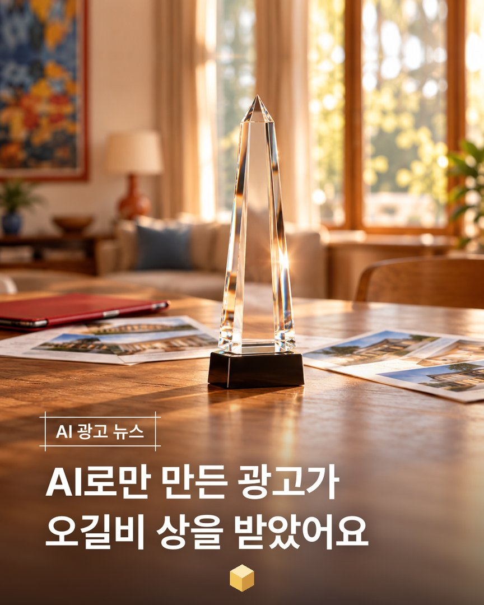
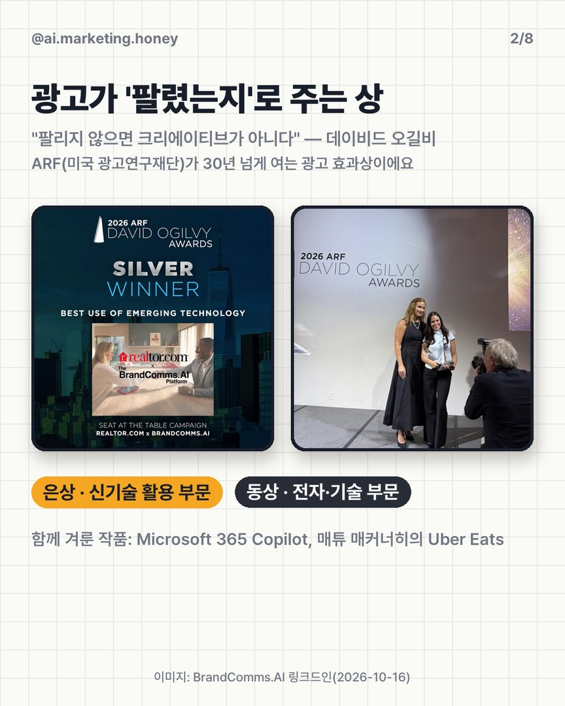
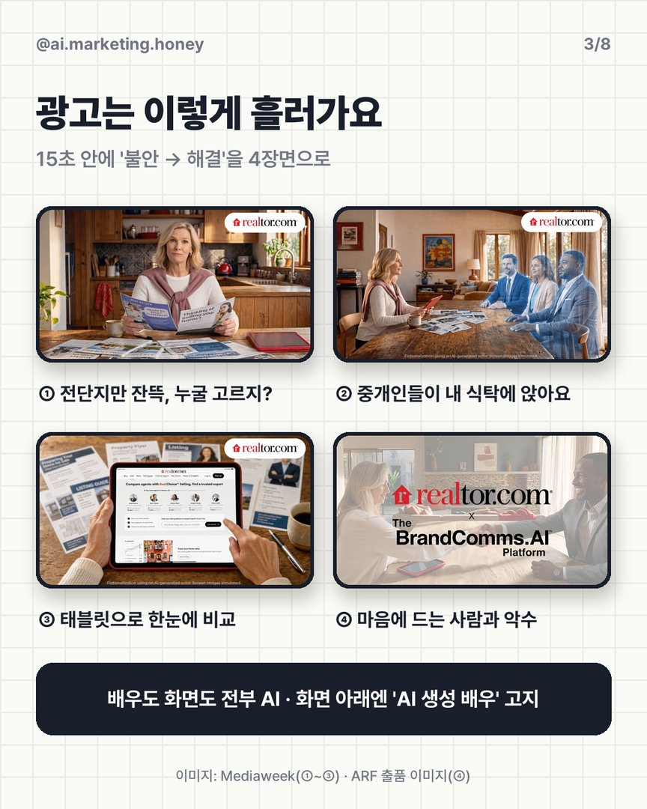
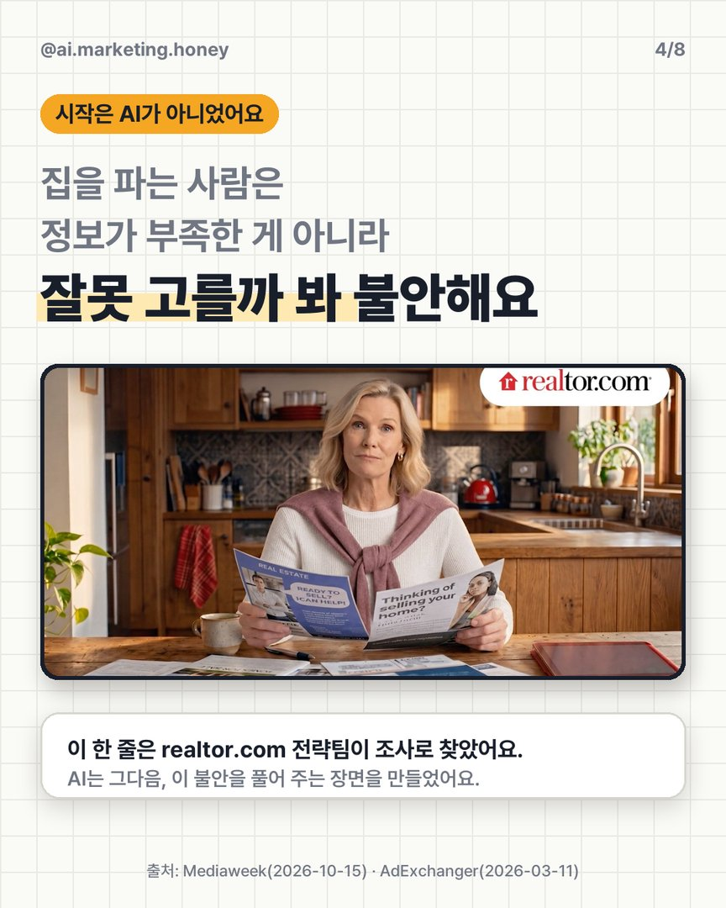
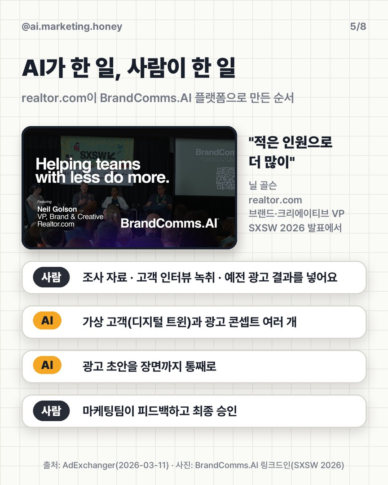
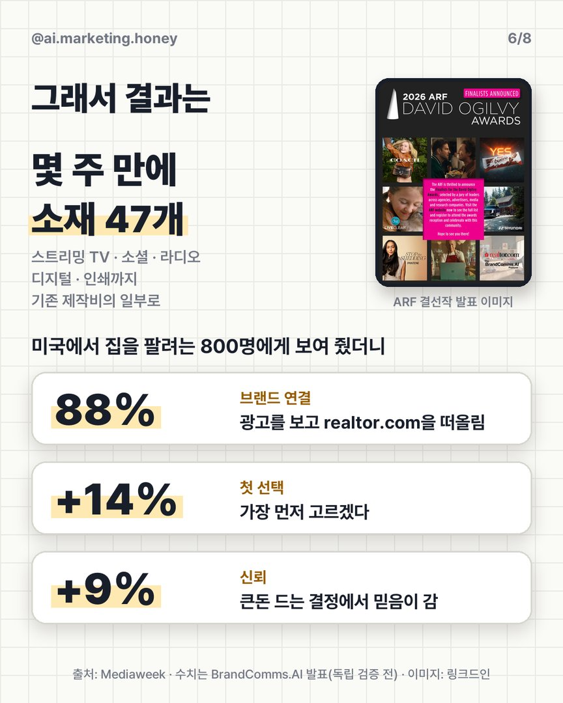
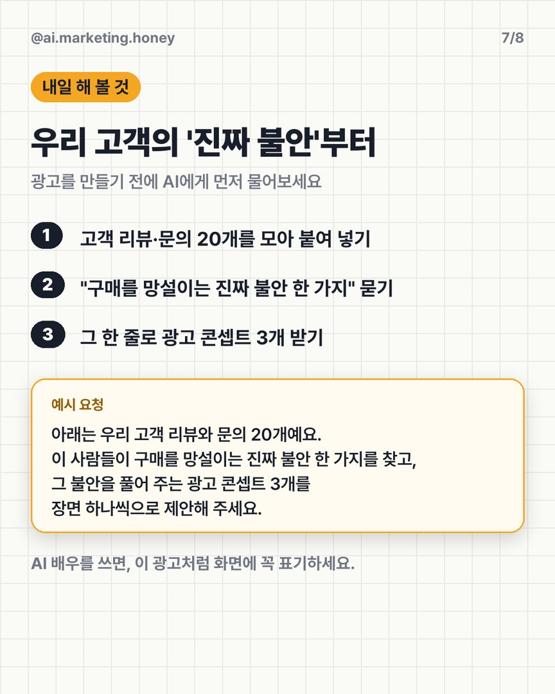
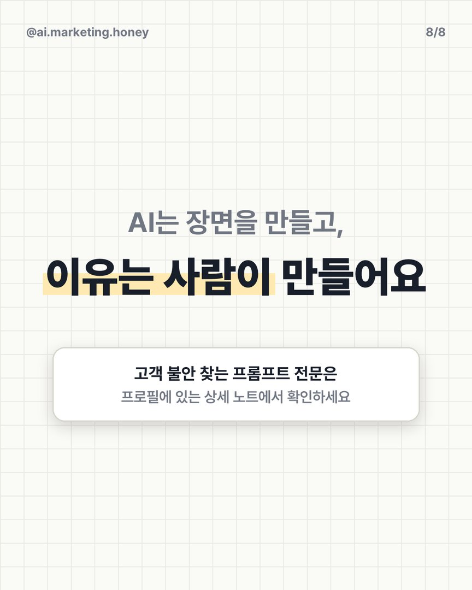
옆으로 넘겨 보세요 →
02무슨 상을, 어떻게 받았나
2026 ARF 데이비드 오길비 어워드 은상(신기술 활용 부문)과 동상(전자·기술 부문). 함께 겨룬 작품은 Microsoft 365 Copilot, 매튜 매커너히가 나온 Uber Eats였어요. 대상은 fairlife 'Core Power'가 받았어요.
realtor.com 'Seat at the Table'. 집을 팔려는 사람이 전단지만 잔뜩 쌓아 두고 고민하다가 → 중개인들이 반투명하게 식탁에 '자리를 잡고' → 태블릿으로 비교한 뒤 → 마음에 드는 사람과 악수해요. 배우도 화면도 AI로 만들었고, 화면 아래에 "AI 생성 배우를 쓴 연출"이라고 표기했어요.
멜버른의 AI 광고 플랫폼 BrandComms.AI. ARF 결선 명단의 출품사는 realtor.com의 광고 대행사(Avrett Free & Ginsberg)로 올라 있어요.
원본 광고 영상은 공개된 곳을 찾지 못했어요. 스트리밍 TV·소셜 유료 광고로만 나간 것으로 보여요. 캐러셀의 장면 컷은 기사와 수상 게시물에 실린 이미지예요.
03시작은 '불안 한 줄'
이 인사이트는 AI가 아니라 realtor.com 브랜드 전략팀이 정성·정량 조사로 찾았어요. 광고는 이 불안을 '중개인이 내 식탁에 앉는다'는 장면 하나로 풀었어요.
- 사람조사 자료, 고객 인터뷰 녹취, 예전 광고와 테스트 결과를 플랫폼에 넣어요.
- AI타깃 고객의 '디지털 트윈'(가상 고객)과 광고 콘셉트 여러 개를 만들어요.
- AI광고 초안을 장면까지 통째로 만들어요.
- 사람마케팅팀이 피드백하고 최종 승인한 뒤 집행해요.
그렇게 몇 주 만에 스트리밍 TV·소셜·라디오·디지털·인쇄용 소재 47개를 만들었어요. 미국 집주인 800명 테스트에서 브랜드 연결 88%, 첫 선택 +14%, 신뢰 +9%가 나왔다고 해요(BrandComms.AI 발표 수치, 독립 검증 전).
04바로 쓰는 프롬프트
아래는 우리 고객 리뷰와 문의 20개예요. 이 사람들이 구매를 망설이는 진짜 불안 한 가지를 찾고, 그 불안을 풀어 주는 광고 콘셉트 3개를 장면 하나씩으로 제안해 주세요. [브랜드: 우리 브랜드 · 제품명] 1. 리뷰: … 2. 문의: … (20개까지)
💡 리뷰만 넣지 말고 구매 전 문의도 섞어 넣으세요. 망설이는 이유는 문의에 더 잘 드러나요.
찾은 불안마다 근거가 된 리뷰 번호를 붙여 주고, 과장 광고로 보일 수 있는 표현(효과 단정, 수치)은 빼 주세요. 1순위 콘셉트는 15초 광고 장면 4개로 나눠 주세요.
05실제로 돌려 본 결과
2026-10-18, ChatGPT(GPT-6)에 가상 브랜드 '허니 뷰티' 꿀 앰플의 리뷰·문의 20개를 위 프롬프트 그대로 넣었어요. 리뷰는 설명용으로 만든 예시예요.
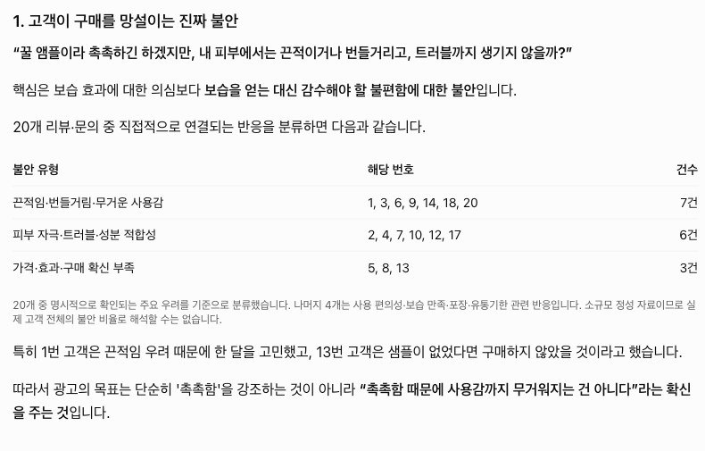
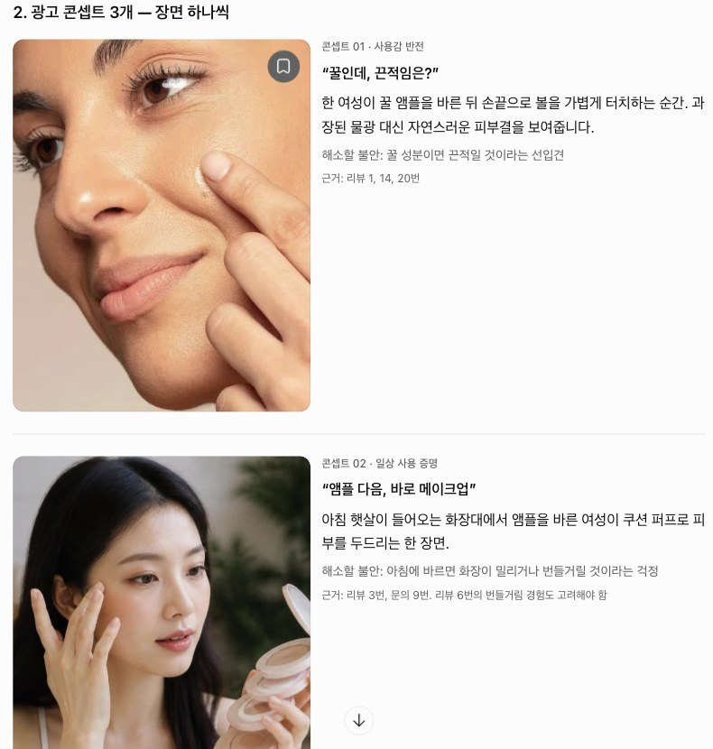
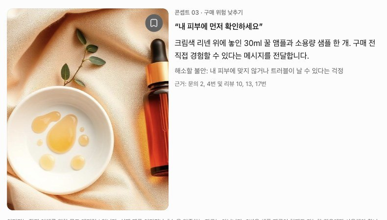
"꿀 앰플이라 촉촉하긴 하겠지만, 내 피부에서는 끈적이거나 번들거리고, 트러블까지 생기지 않을까?" 20개 중 끈적임·번들거림 7건, 피부 자극·성분 6건으로 나눠서 리뷰 번호까지 붙여 줬어요.
① "꿀인데, 끈적임은?" 바르고 손끝으로 볼을 터치하는 장면 ② "앰플 다음, 바로 메이크업" 아침 화장대 장면 ③ "내 피부에 먼저 확인하세요" 본품과 샘플을 나란히 둔 장면.
한 번 돌려 본 결과예요. ChatGPT도 "자료가 적어서 전체 고객 비율로 보면 안 된다", "끈적임이 전혀 없다고 단정하지 말라"는 단서를 스스로 달았어요. 콘셉트는 출발점이고, 실제 광고 문구는 사람이 심의 기준에 맞춰 다듬어야 해요.
06써 보기 전에 꼭
- 고객 리뷰·문의에서 이름·연락처·주문번호는 지우고 넣으세요.
- AI 배우·AI 화면을 쓰면 이 광고처럼 화면에 표기하세요.
- 효능·수치를 말하는 문구는 광고 심의 기준으로 따로 검토하세요.
07출처
대행사에서 AI 교육하는 현직 마케터가 직접 써 보고 정리해요.
인스타에서 팔로우